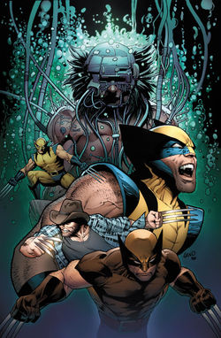

Sobre o Wolverine

Wolverine é um herói de histórias em quadrinhos publicados pela Marvel Comics. A primeira aparição do personagem foi na revista de HQ Incredible Hulk #180 (outubro de 1974) e foi criado pelo escritor Len Wein e pelo diretor de arte John Romita, que desenvolveu o personagem. Foi desenhado pela primeira vez para publicação por Herb Trimpe.
Nascido James Howlett e comumente conhecido como Logan, Wolverine é um mutante que possui sentidos de animais aguçados, capacidades físicas melhoradas e poderosa capacidade regenerativa, conhecida como fator de cura. Ele foi descrito várias vezes como um membro dos X-Men, Tropa Alfa, e dos Vingadores.